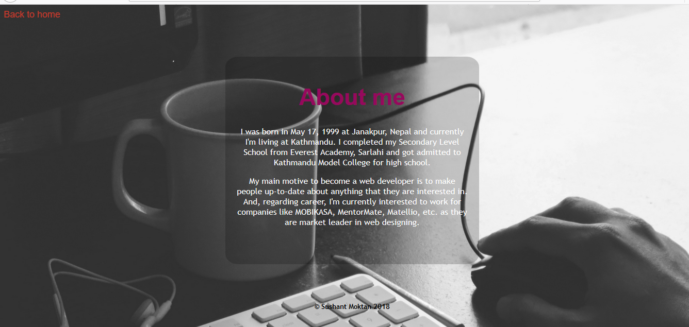
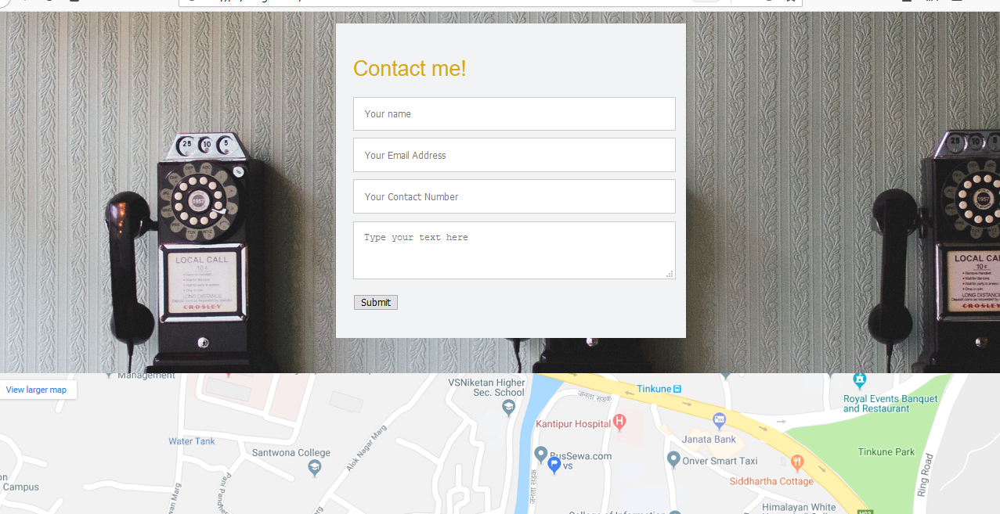

The assignment of CSY-1018 was about designing a website aboutourselves.The main objective of the assignment is to make student perfect in using HTML, CSS, Github, etc. which were taught in First term of this module. Also different properties such as Google Material Design, Mobile Responsive design have been introduced in the module.
For designing this web page, HTML and CSS properties were used. HTML was used to write the codes for the page and CSS was used to design those HTML pages.
There are six different pages to be designed as per the brief.
This page is the landing page or home page of the website.There is a navigation bar at the right corner of the page to visit other pages. I have used a div named "profile box" to include my name and photo. CSS properties were used to make the profile box transparent. In the footer section, there is copyright part. The background for this page is used from url:https://unsplash.com/.
This page contains a brief description about me.There is a navigation bar at top left corner to return to Home page and a container at the center in which I've written about myself.At the bottom of the page, there is a copyright footer.The background for this page is used from url:https://unsplash.com/.
This page contains the biodata of me such as my education, skills,interests,hobbies etc.

Social page contains the link of my social accounts of different social medias such as google plus, facebook, instagram, etc. There is a copyright footer.The background for this page is used from url:https://unsplash.com/.
There is a HTML contact form in the page and people can send me messages through this page. There is also an embedded google map.
This assignment made me more fimiliar with the codes of HTML and CSS. First, I was able to make my own CV website. Also, I was able to make a contact form, embed a map in the page, use different HTML and CSS properties.